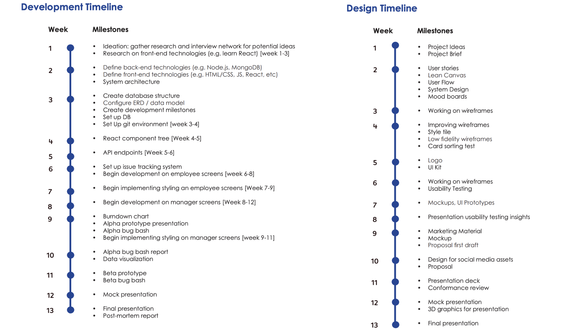
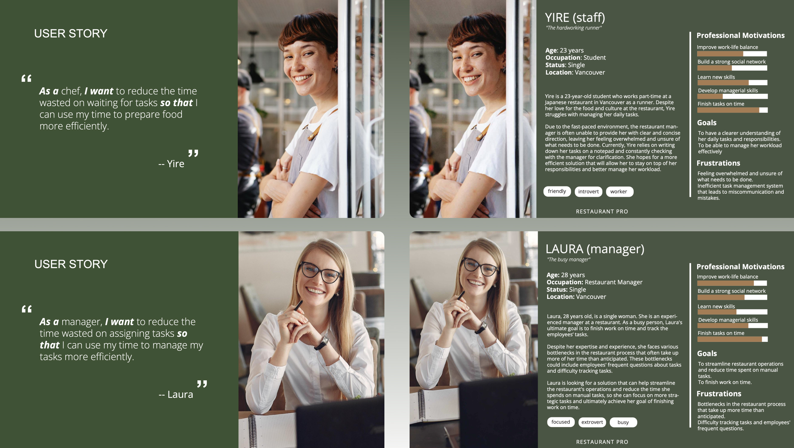

RestaurantPro
Desktop & Mobile App
RestaurantPro is a desktop app for restaurants that helps manage tasks and communication efficiently. It solves the problem of missed tasks and confusion by providing real-time updates and easy task assignments. Employees can access all the necessary information about their tasks, leading to better teamwork and customer service. Overall, the app streamlines operations and improves customer satisfaction.
Project Information
⏰ Project duration : 13 Weeks
ü¶∏ü誂Äç‚ôÄÔ∏è My roles: UI/UX Designer & Project Manager
üåü Team size: 3 Designers & 4 Developers
Problem
Restaurants heavily depend on their servers to provide top-notch customer service and ensure that all tasks are completed efficiently. However, many servers struggle to effectively manage their tasks during their shifts, leading to missed tasks, poor prioritization, and unhappy customers. Verbal or written communication is the primary method managers use to assign tasks to servers, which can be time-consuming and prone to miscommunication.
Additionally, servers may not have access to up-to-date information on their tasks or deadlines, leading to further confusion. These issues are often caused by a lack of clear communication from management and the absence of effective task management tools.
Solution
To solve the problem of inefficient task management and communication in restaurants, developing a comprehensive task management and communication app is the solution. This app should be specifically designed to address the specific needs of both managers and employees, ensuring that all tasks are communicated clearly and efficiently.
The app should enable managers to assign tasks to employees easily, set deadlines, and communicate changes in real-time. Additionally, it should allow employees to access all necessary information regarding their tasks, deadlines, and any updates or changes from their managers. The app should also provide a platform for employees to communicate with each other and their managers effectively.
By developing such an app, restaurants can streamline their day-to-day operations, improve productivity, and ultimately provide better customer service. The app can help employees prioritize their tasks, avoid errors, and ensure that all tasks are completed on time, leading to satisfied customers and increased revenue.
In conclusion, developing a task management and communication app for restaurants is a solution that can significantly improve their operations. By addressing the specific needs of both managers and employees, the app can streamline communication, reduce errors, and ultimately lead to better customer service and increased revenue.
My Roles
As a UI/UX Designer
In our project, I played a pivotal role in ideation and project briefing by engaging in brainstorming sessions with the team. We focused on understanding user pain points through interviews, aiming to develop applications that would address their needs.
Once the application concept was defined, I took charge of preparing interview questions for restaurant managers and staff. Conducting on-site interviews with restaurant personnel, I interacted with participants, posed relevant questions, and recorded their responses. Post-interview, I organized and synthesized the findings into comprehensive reports.
Contributing to a better understanding of users, I actively participated in creating user stories and personas. Following the establishment of user flows and sitemaps, I conducted in-person usability tests, including moderated sessions and open card-sorting tests. I ensured the flawless functionality and flow of the application by engaging user groups in these tests. Compiling the results, I created a detailed report and presented my findings. Based on the insights gained from these tests, I implemented the necessary changes to enhance the application.
I also made significant contributions to the preparation of hi-fi wireframes and mockups. I took on roles in all group tasks, regardless of whether they were specifically assigned to me, and did my best to ensure that my team delivered their tasks on time and in a complete manner.
As a Project Manager
As the project manager, I successfully managed weekly agile sprints; by organizing group meetings at the library, I ensured effective participation from all team members. My responsibilities included assigning tasks to team members through Jira on a weekly basis, monitoring their progress, and ensuring the smooth integration of every team member into the project. I proactively checked for any individual or group issues, promptly resolving them if they arose. Additionally, I ensured that my team consistently met deadlines, delivering required outputs on time and in a complete manner.
Timelines

User Goals
As a user, I want to easily view and manage all my assigned tasks in one central place.
As a user, I want the ability to receive real-time task notifications and updates from my managers.
As a user, I want detailed information about each task, including deadlines and any changes made by managers.
User Stories and Personas

High Fidelity Wireframes
Tools
During our project, we utilized a variety of apps to help us with ideation, collaboration, design creation, and production. We used Miro to brainstorm and visualize our ideas, while Figma was used for wireframes, prototypes, and final designs for our mobile and desktop apps. We also utilized Adobe Illustrator to create custom icons for our app and Adobe Photoshop for editing photos. For the final production of our project, we used Adobe InDesign to create a professional-looking booklet. These apps helped us to collaborate effectively, create high-quality designs, and produce deliverables that met professional standards.
Trello was used for organizing our design tasks and tracking progress, while Slack allowed us to communicate frequently and share updates with our remote team. Google Drive was an excellent tool for collaboration, allowing us to store and share important project documents, such as project briefs, design specifications, user research findings, and real-time feedback. Together, these technologies helped us manage our project efficiently, collaborate effectively, and communicate with our team members.
Conclusion
The RestaurantPro project was an enriching experience where I had the opportunity to play dual roles as a UI/UX Designer and Project Manager. As a UI/UX Designer, my primary focus was to create an interface that looked visually appealing and ensured a seamless and intuitive user experience. It was a creative challenge that allowed me to apply my design skills and create a user-friendly layout that met the needs of restaurant employees.
Throughout the project, I gained hands-on experience in the UI/UX design process, from wireframing and prototyping to final design implementation. As a Project Manager, I developed strong organizational skills, efficiently managing timelines and resources to meet project deadlines successfully. The ability to effectively balance design creativity and project management was a valuable lesson I will carry forward in my future endeavours.
In conclusion, the RestaurantPro project was a rewarding journey that allowed me to grow as a UI/UX Designer and a Project Manager. I learned the importance of user-centred design, the significance of effective team coordination, and the art of juggling multiple responsibilities. The skills and experiences gained from this project will undoubtedly be assets in my future career as I continue to design intuitive and user-friendly interfaces while adeptly managing projects to drive successful outcomes.
My Other Projects
You can access my other projects by clicking on the button below.